Lead Features
- Chair's note1 page, not started
- Student featureLizzy Su or Megan Li / EYU
- Faculty featureEdwin Schauble, isotope analysis
- Science, art, and interview featureDavid Jewitt and Hilke Schlichting
- Alumni profileAllen F. Glazner
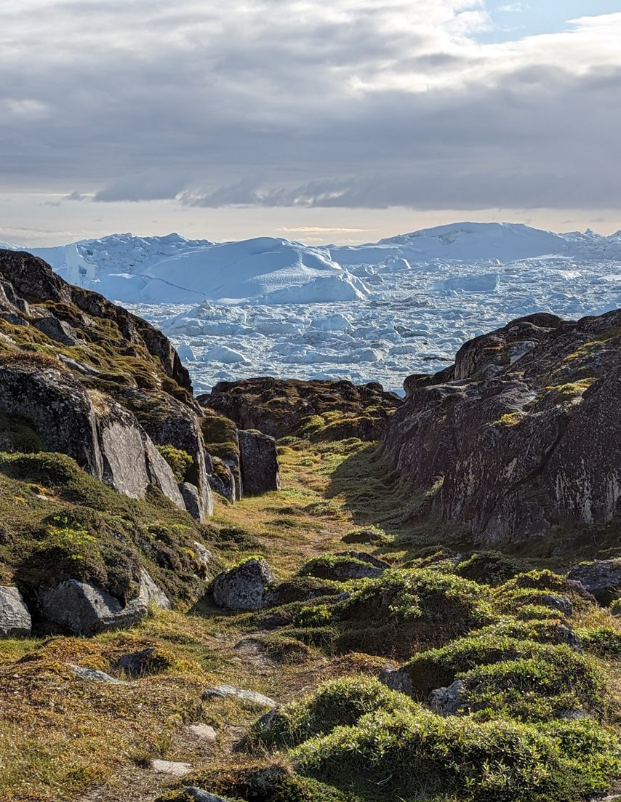
Welcome to the New
2025-2026 from Earth and beyonds: A year of discovery, fieldwork, mentorship, remembrance, and Bruin science.
Live Outline
These cards are editorial placeholders, not final article titles. They organize the updated contents into production-ready lanes.
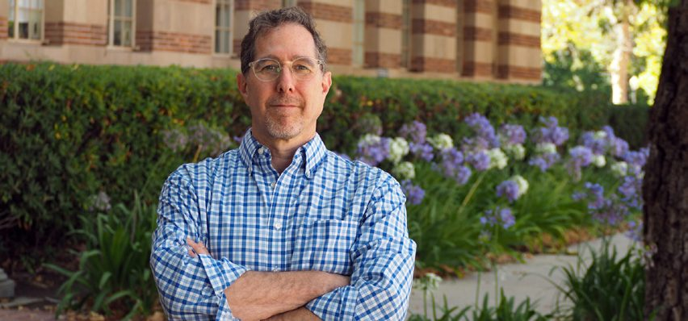
Chair's Note
Use this lead story for the annual welcome, department-wide reflection, priorities for the year ahead, and links into the rest of the issue.
View in plan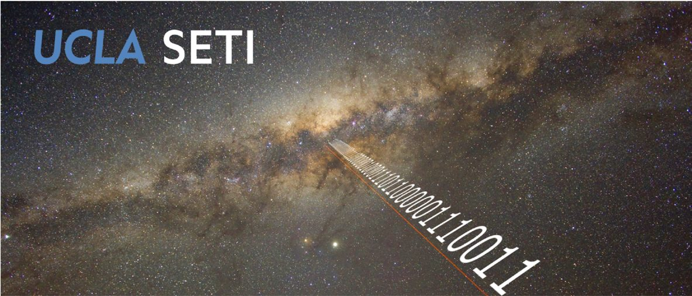
Research Feature
A long-form feature slot for the RIMFAX story, with room for David Paige and Emily Cardarelli context, mission visuals, pull quotes, figures, and related links.
Read storyIssue Briefs
Use this module for planned pieces that are bigger than a planning-board line but smaller than a lead feature.
Art & Science
Interview or visual Q&A slot for the science, art, and creative-process feature.
Course Photo Essay
Short field-course story that can stand alone or feed into the Suburban retrospective.
Student Recognition
Recognition module for fellowship recipients, projects, mentors, and short student research notes.
Research Gallery
Visual roundup for published cover art, figures, captions, and links to the associated papers.
Annual Standing Slot
Keep as a reusable template slot; publish it only if the final 2026 issue confirms names and photos.
Community
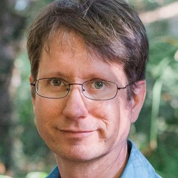
Faculty Feature
Feature slot for a faculty profile with research overview, accessible science framing, and quotes.
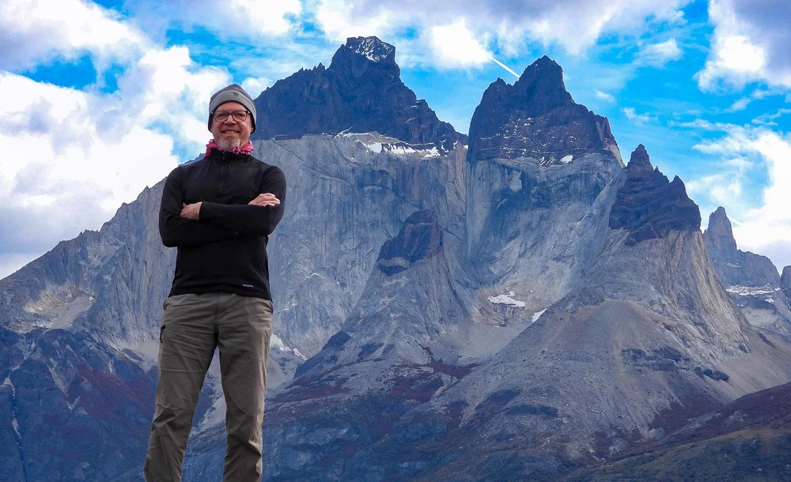
Alumni Profile
Alumni profile slot for career path, EPSS connection, scientific impact, and archival imagery.
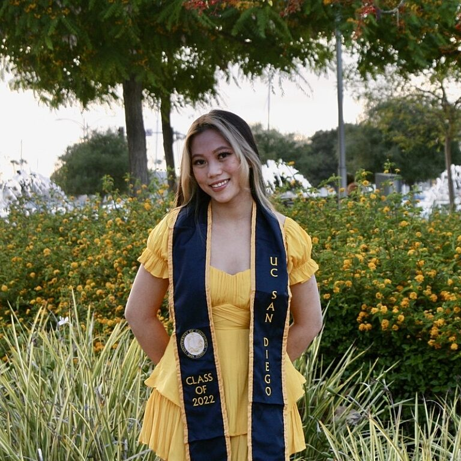
Student Voice
Student feature slot for future plans, final-year perspective, EYU, or another recent graduate angle.
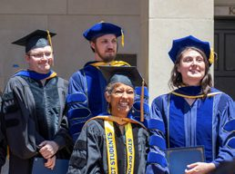
Student Organization
Recruitment and community story for student leadership, events, mentoring, and ways to get involved.
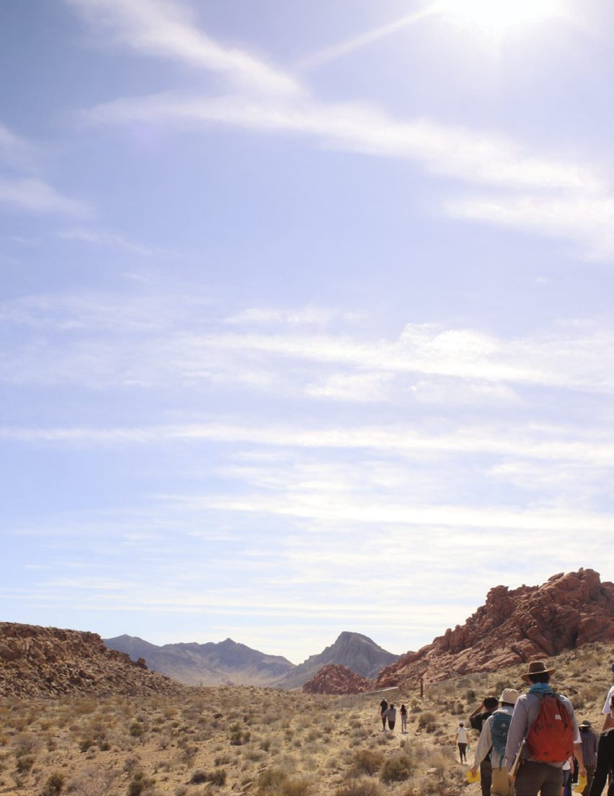
Field Trips
Photo-rich field-program story about the department field vehicle's life, classes, trips, and farewell.
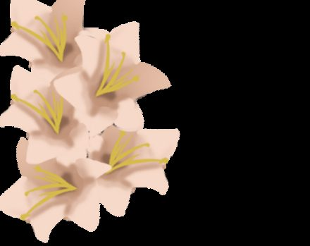
In Memoriam
Respectful remembrance slots for Art Montana, Ronald Shreve, Candace Hansen, and Gerald Schubert.
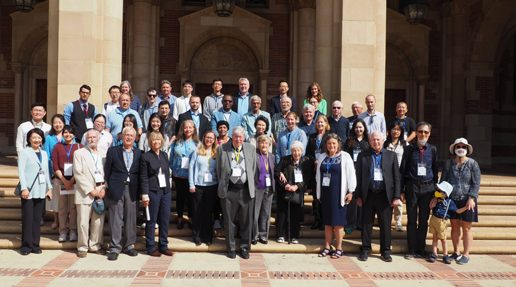
Farewells
Career milestone format for Craig Manning, Gilles Peltzer, Steve Joy, and Peter Chi.
Lab & Research Updates
Short dispatches from BALBOA, Eos research highlights, journal covers, and the hands-on work that keeps science moving.
One-page research update slot with mission context, current status, images, and what readers should watch for next.
Short synthesis format for recent research coverage, key findings, and links to the original pieces.
Multi-faculty roundup format for hands-on, field-based, instrument-based, or creative scholarly work.
Awards
Annual list module for Chancellor Postdoctoral Fellows, 51 Pegasi B Fellows, NASA FINESST, Jean-Luc Margot's Royal Academy of Belgium honor, Hao Cao's Sloan Fellowship, undergraduate summer fellowships, undergraduate awards, and PhD fellowships.
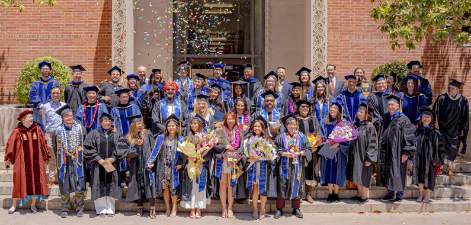
Commencement
Photo-forward recap for graduates, speakers, degree lists, ceremony highlights, and awardees.
Giving
Donor recognition can live here as a searchable annual honor roll, grouped by fund, endowment, or giving level if desired.
Support EPSSLong-form Template
Replace this block with the RIMFAX feature. Suggested fields: mission overview, EPSS connection, research visuals, David Paige and Emily Cardarelli context, glossary, related links.
Feature Article
A retirement and retrospective story for the department field vehicle: the classes it carried, the field sites it reached, the photos it appears in, and the stories students and instructors still tell about it.
Suggested source material: Kevin/Kenzie reflections, Peng's igneous petrology students, Geophysics 136C highlights, student photos, and a visual timeline of the vehicle in use.
Template Notes